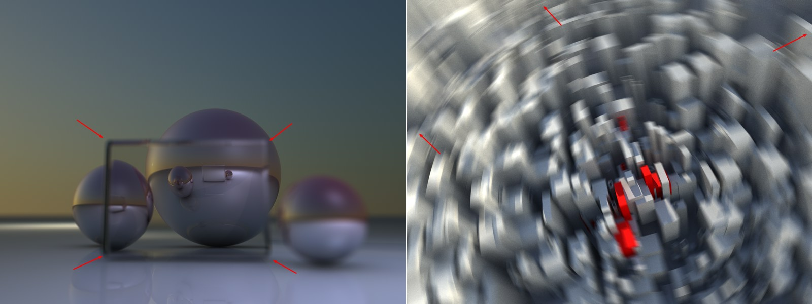

Function available in CINEMA 4D Prime, Visualize, Broadcast, Studio & BodyPaint 3D
渲染设置 基本 输出 保存 多通道 抗锯齿 材质覆写 选项 立体 Team Render基本特性
基本特性
名称
你可以在这里输入渲染设置的名称。
当特性保存为预设后，这个名称还会出现在渲染菜单和内容浏览器中。
保存
使用这个选项可以全局地设置在渲染中要保存哪些数据，它还会应用到多通道和合成文件中。
启用多通道渲染
启用或禁用多通道渲染。
启用立体渲染
这是启用和或禁用立体渲染的主要开关。要查看详细内容，请参考立体。
材质覆写
参见材质覆写。
渲染器 [-2147483648..2147483647]
根据你安装的渲染器，这里会显示可用的渲染器列表，用它设置 CINEMA 4D 要使用那种渲染器进行渲染。通常列表中有以下渲染器：
- 标准：通常 CINEMA 4D 会使用的渲染引擎。
- 软件OpenGL：用在视窗中显示的渲染器。OpenGL 会使用 CPU 进行渲染因此会比硬件OpenGL慢。软件OpenGL和硬件OpenGL之间没有明显的差别（详见硬件OpenGL）。
- 硬件OpenGL：用在视窗中显示的渲染器。OpenGL 在使用显卡时渲染速度最快。
- 物理：一个特殊的渲染器，会使用物理摄像头来渲染如真实 3D 景深或动态模糊等特殊效果。
- CineMan：如果你想要使用 CineMan 兼容的渲染器，请使用这个选项（参见 CineMan）。
- 其他安装的渲染器。
标准还是物理渲染器？
在大多数情况下你应该使用通常的 CINEMA 4D 渲染器（标准），因为它很快而且稳定。
但是如果你想要准确地表现如下的照片效果，你应该使用物理渲染器。
- 渲染有相应模糊效果的景深
- 渲染动态模糊
- 装饰（图片边缘变暗）
- 色差（边缘处的彩色接缝）等
- 当渲染多个组合的模糊效果（有景深、区域阴影等效果的动态模糊）时，物理渲染器要比标准渲染器要快。
但是物理渲染器也有一些不可忽视的缺点：
- 对物理效果的真实模拟需要更大的计算量和更多的时间。不过它也提供了一些设置，通过这些设置有巨大的优化潜力，尤其是可以使快速的预览渲染成为可能，搭配进程式采样（无穷渲染）还能得到更多的可能性。详见这里。
- 物理渲染器有很多缺陷，例如它不能与素描卡通、线描染器、高光（以及选择菜单中的一些其他效果）等一起使用；动态模糊不能与一些如 PyroCluster、可见灯光、对象辉光等特殊元素一起使用；还有，毛发渲染会慢得多，毛发多通道无法被渲染；最后，无法渲染硬投影（会渲染为区域阴影进行取代）。
- 当动态模糊与多通道和着色器（例如使用自己缓存的接近着色器和插件着色器）一起使用时会产生错误的结果。
物理渲染器中的一些效果现在在后期制作中已经可以被模拟了，虽然其中的大部分都是通过欺骗实现的，而且结果与真实渲染的效果并不相符。这可以应用到以下的情况，例如：

- 左图：你可以在图中看到一个玻璃立方体位于一些球体前方。这个立方体自身是模糊的，但是在它后面的球体是聚焦的。如果对一个深度图不包含其背后物体信息的透明物体应用了 2D 特效，那么玻璃立方体背后的所有物体都会被处理为失焦（模糊）。
- 右图：2D 动态模糊效果通常在边缘处有缺陷，因为没有位于渲染范围以外的物体的信息可用，但是对真实的 3D 动态模糊中不存在这个问题。